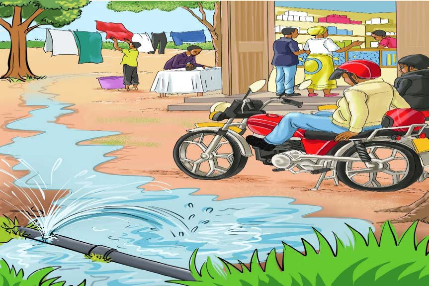

Kielelezo namba 4: Bomba lililopasuka likitiririsha maji
Ili kuzuia upotevu wa maji tunapaswa kutumia maji kwa uangalifu, kama kufunga bomba iwapo maji hayatumiki kwa wakati huo. Pia, tunapaswa kukarabati mabomba mabovu na kuratibu matumizi ya maji kwenye vyanzo vya maji. Vilevile, tunapaswa kutoa taarifa kwa mamlaka za maji endapo kutakuwa na bomba la maji lililopasuka. Aidha, wakulima wanaotumia kilimo cha umwagiliaji wanapaswa kutumia teknolojia endelevu za umwagiliaji zinazotumia kiasi kidogo cha maji.